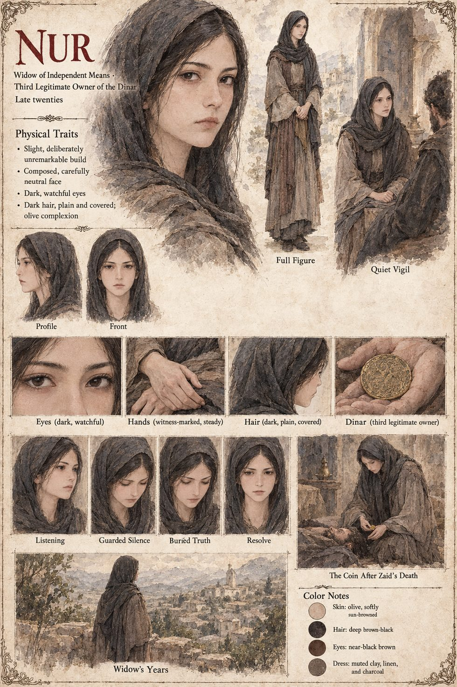

Nur
Sold into a river-city wine-house at fourteen · the dinar's fourth owner · later a widow of independent means three provinces from anywhere · late twenties by her sheet
Sold into the service of a wine-house in a caravan city by a river at fourteen, and long past expecting kindness from any man who paid for her time. She learned early that the men who talk most freely are rarely worth answering honestly, and she files what a client lets slip in the dark without comment, without visible reaction and without forgetting a word. When Zaid arrives, with sudden gold and the new discovery that money makes a very attentive audience of people who would otherwise have no reason to listen, he tells her everything over several weeks: the coin, the woman in the desert, the shepherd everyone will blame instead of him. She says very little in return. He is found dead on the nineteenth of Havren, face-down in a room he had paid for with a coin that always found its way back into his pocket, and within the hour she has searched him and taken it, not from greed alone but because she had listened to a dying man's whole confession and understood, better than he ever did, exactly what she was holding.
Within a week of leaving the river city she walks into the wine-house's counting-room with the coin and buys back her own bond, which thirty years of ordinary wages could not have touched; the owner counts it twice, weighs it once and asks no questions. She settles in a village three provinces from anywhere Zaid ever named, as a widow of independent means, the only story anyone thought worth checking. She spends the coin rarely and only on small things, which the village reads as thrift and she understands as penance: she does not want to build a second fortune on a dead woman's dower, and the coin's insistence on returning to her feels some nights like a debt collector who will accept nothing except the one thing she cannot give back. In her first months there she composes, in her very limited letters, an unsigned account of what Zaid confessed, and burns it unsent the same night, having understood what an anonymous letter from an unnamed widow would be read as. What she needs is not a truth but a truth-teller.
Nearly two years after Zaid's death a traveling scholar who calls himself a collector of old coinage comes asking after a dinar with a particular history, a lie so thin she sees through it in one conversation, though she says nothing. On the second evening she tells him she has been waiting for someone to arrive who wanted it badly enough to be honest about why. The akad that passes the coin to Qasim is witnessed by the village well-keeper and a passing grain-merchant, and before he leaves she gives him the name of the man who killed Amina, and the plain fact that an innocent shepherd has spent two years in another clan's custody while several hundred people died in his name. She lives out her life in the same village, known as a widow of quiet and slightly mysterious means, and tells no one else, not a neighbor and not a friend she makes in her last years, what a dying thief confessed to her in the dark, or what she did afterward with the one truth that could have ended the war eighteen months sooner than it ended, had she known to whom it should be told.
The sheet draws her slight and deliberately unremarkable, with a composed, carefully neutral face, dark watchful eyes, dark plain covered hair and an olive, softly sun-browned complexion, in a charcoal head-covering and muted clay-and-linen dress; its panels show her listening, in guarded silence, with a buried truth, in resolve, kneeling over Zaid's body with the coin, and standing above a hill village in her widow's years. The manuscript gives her no age or appearance, so the age band, colouring and clothing are the sheet's. The sheet's title calls her the dinar's third legitimate owner; by the manuscript's five holders and five transfers she is the fourth, after Malik, Amina and Zaid, and this entry follows the manuscript.